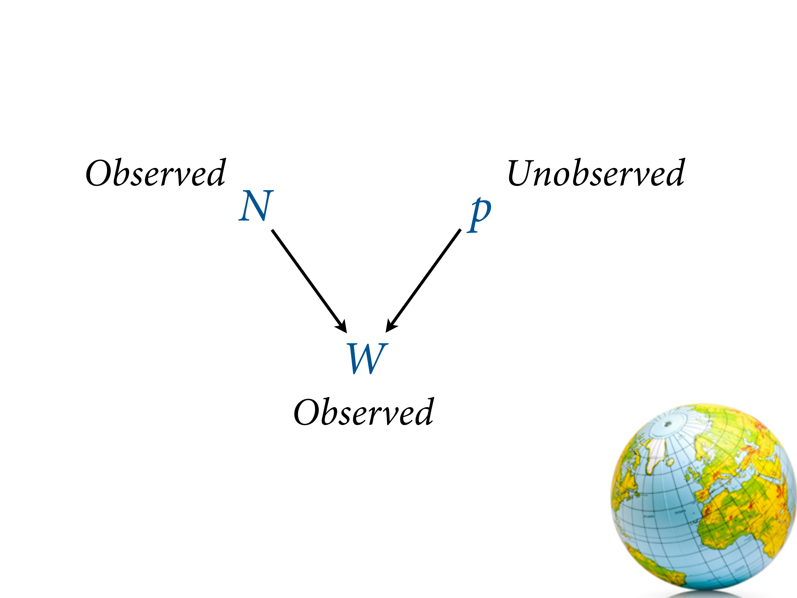
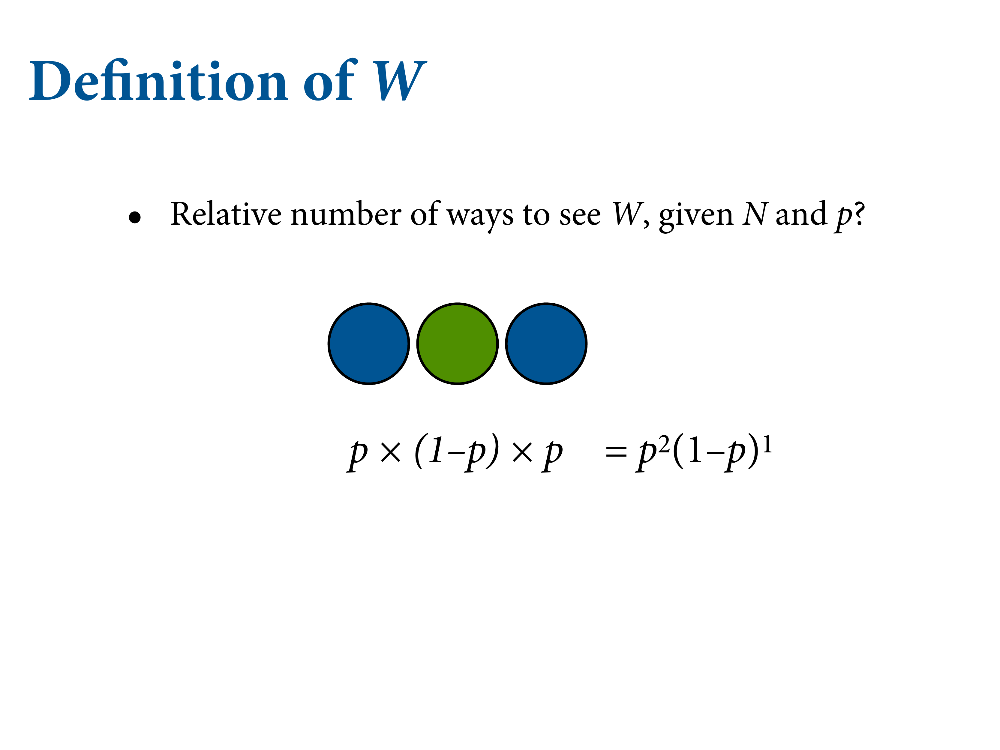
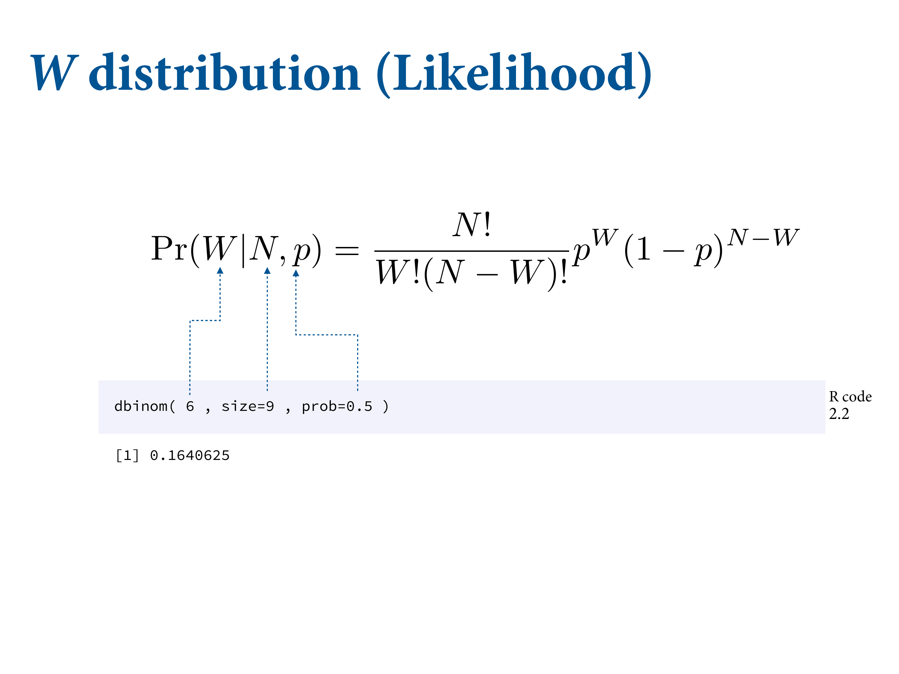
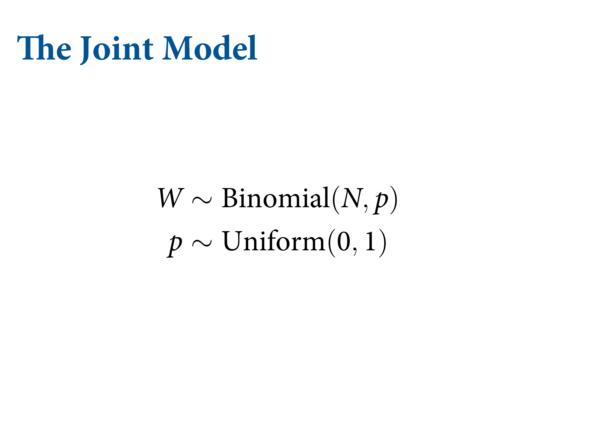

1.3 Components of the model

Figure 1.20: Here we have three variables.

\(N\) = number of tosses. \(p\) = true proportion of water \(W\) = observed water catches. The arrows show that generatively, \(N\) and \(p\) cause \(W\). The values of \(N\) and \(p\) don’t depend on \(W\). But they do inferentially. Bayesian inference works backwards.
Figure 1.21: Two of these variables have been observed. But one of them has not, so we have to infer it from the other two.
Figure 1.22: We want a mathematical function so that we don’t have to draw the garden. It’s called a probability distribution.

Figure 1.23: This is a famous probability distribution that’s very easy to build up from first principles.
Figure 1.24: We also have to count for the orderings - what are all the ways that can happen?

Figure 1.25: In this particular case, it’s the above formula. Together, this gives you the binomial distribution.

Figure 1.26: It’s just a compressed mathematical formula for the garden of forking data.


dbinom(6, size = 9, prob = .5)## [1] 0.1640625Figure 1.27: These probabilities describe the prior predictive distribution. In later chapters, this will be a very interesting object.


Figure 1.28: There’s a stereotyped way to write models.
“W is distributed binomially with \(N\) trials and probability \(p\), and \(p\) is distributed uniformly with a mean of 0 and a standard distribution of 1.” Simplest possible Bayesian model I can imagine. Actually LaPlace’s model - the law of succession.